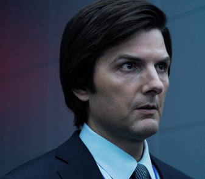
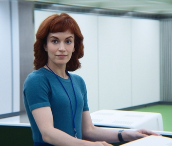
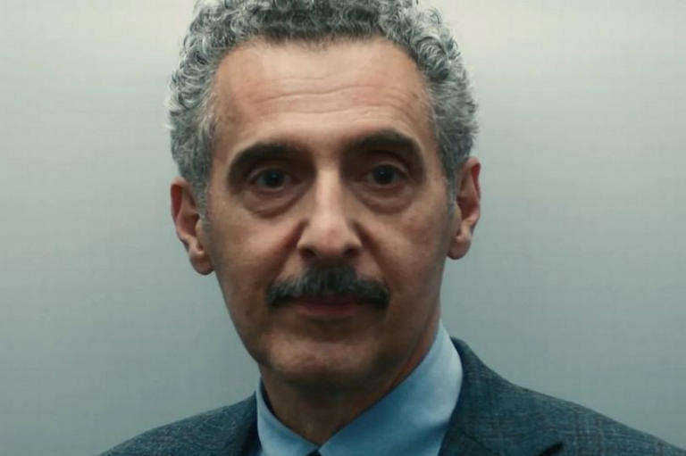
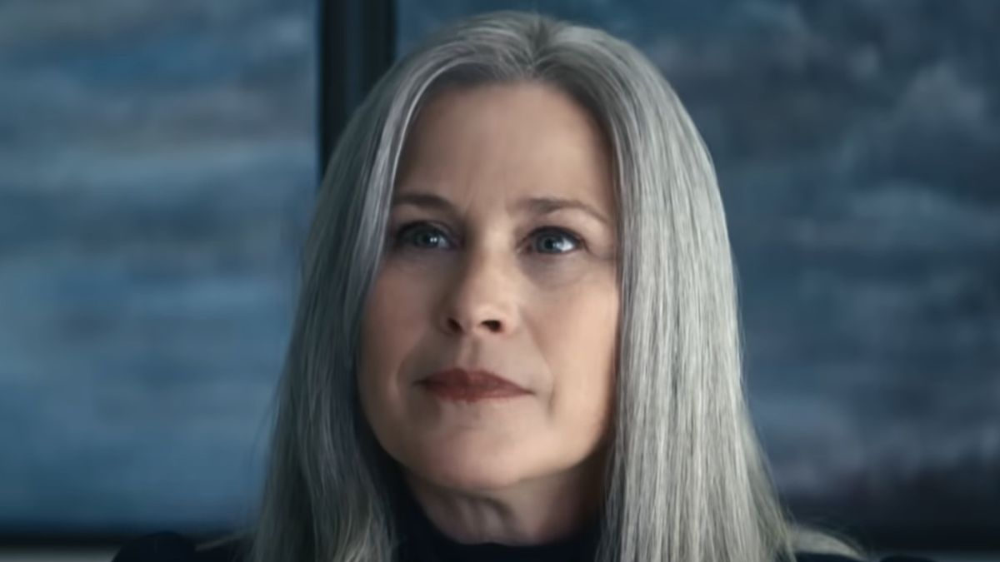
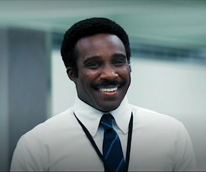

Personajes Principales
Mark S.
Él es el jefe del equipo de Macrodata Refinement, es una persona empatica, lo cual ayuda a su rol.

Helly R.
La nueva empleada del departamento de Macrodata Refinement, ella es rebelde y valiente.

Dylan G.
Parte del departamento de Macrodata Refinement, él es sarcastico, bromista y un poco materialista, pero muy leal.
Irving B.
Miembro veterano del departamento de Macrodata Refinement. Irving es una persona meticulosa y apegada a las normas.

Mrs. Selvig
Ella es la jefa del departamento de Macrodata Refinement, ella tiene una personalidad controladora y es muy devota de la empresa.

Milchick
Encargado de supervisión y disciplinam trabaja con Mrs. Selvig. Siempre sonriente, servicial y de habla elocuente.
